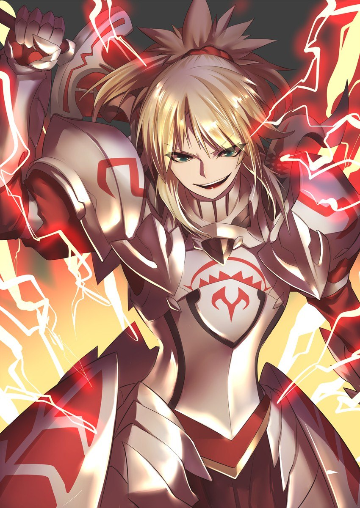
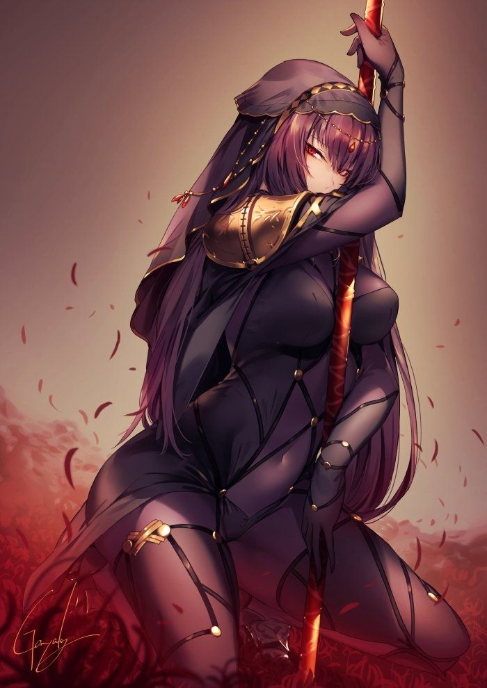
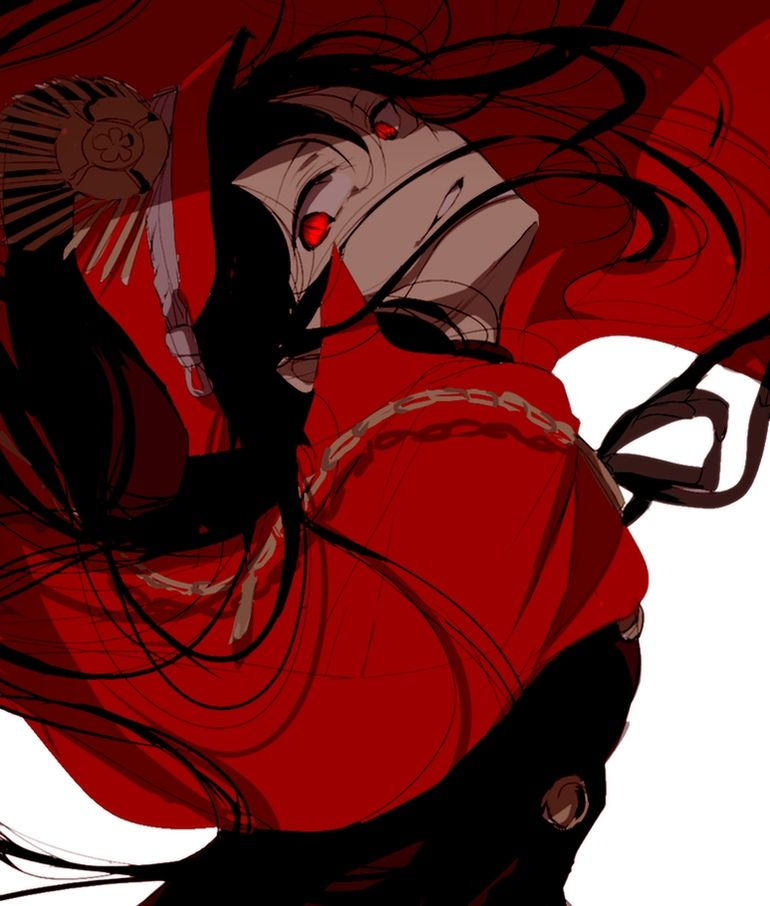
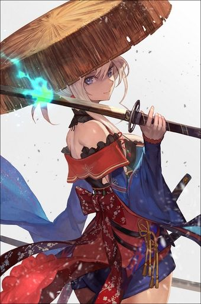

Цитаты

Наш король — это бог войны. Он первым бросается в бой и не знает поражения. Никто не устоит на дороге короля Артура. Его бесстрашная фигура не изменилась с тех пор, как он сделал свой выбор. Король даже не стареет. Он воплощение дракона.

Кого вообще волнует это дерьмо! Я буду делать все, что захочу, когда захочу. Но я признаюсь в своих действиях.
Способность оправдываться за жестокие и непоправимые поступки. Это печальная черта, которой обладают все люди в той или иной степени. И я не исключение. Если бы меня не сожгли на костре, я бы продолжала сражаться, убивая людей во имя Господа.

Я-существование, которое потеряло смерть. Таким образом, хотя я и слуга этого мира, я не настоящий героический дух. И я не Божественный Дух. Я потеряла возможность умереть, и по этой причине я не принадлежу ни к живым, ни к мертвым.

Да, у тебя есть потенциал и ты хороший гонорар. В награду я собственноручно налью тебе чашку чая. Я даже использую Цукумо-НАСУ и бакухан. Радуйся, ты мой самый ценный слуга со времен обезьяны!

Нет ничего вне вас, что могло бы помочь вам стать лучше, сильнее, богаче, быстрее или умнее.